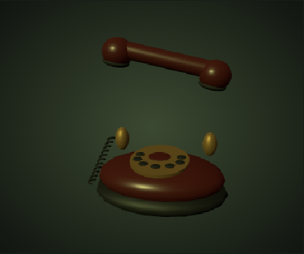
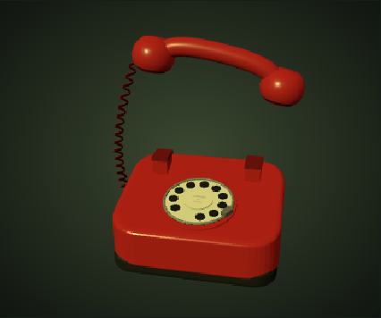
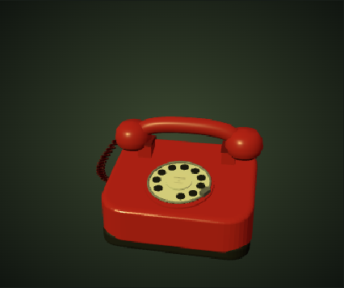
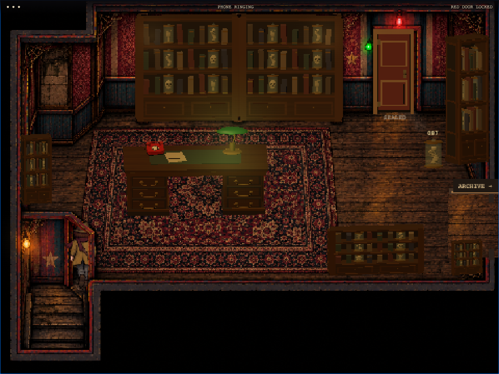

Play from the entrance · Test the harder chase
A connected red rotary telephone replaces the floating parts. The coiled lead stays attached at both ends during pickup and return. The entrance uses its diagonal floor threshold; the tall painted opening is no longer walkable. Four shelf jars rattle, fall, break and release bile-spitting specimens.




Desktop / touch results · Keyboard results
Retained: original artwork, larger investigator, following camera, desk and shelves, green lamp, telephone story, main pursuing worm and delayed exit. Tradeoff: shelf attackers make the route less forgiving; rattling and fixed-aim warnings preserve room to dodge. No new downloaded assets.